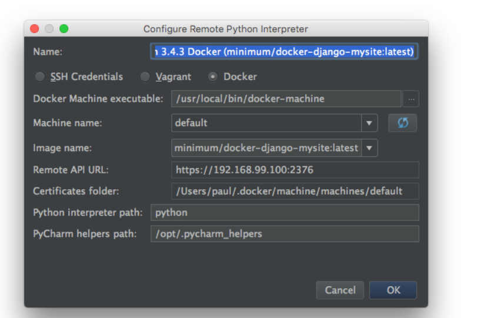

Docker is a software container platform. Developers use Docker to eliminate “works on my machine” problems when collaborating on code with co-workers. Operators use Docker to run and manage apps side-by-side in isolated containers to get better compute density. Enterprises use Docker to build agile software delivery pipelines to ship new features faster, more securely and with confidence for both Linux and Windows Server apps
On to the important part. We need to define a “remote interpreter” that runs in a PyCharm Docker container.
First, go to Preferences -> Project Interpreter and click on the gear to the right of Project Interpreter near the top. In the Configure Remote Python Interpreterdialog, click the Docker button.
Click the menu dropdown for Machine Name. It will likely have one entry named default.
Choosing default gives PyCharm a way to find the Docker daemon, which can let PyCharm know which images are available locally. Hence the dropdown for Images. Click on the dropdown and choose minimum/docker-django-mysite:latest as the image, then click Ok. You now have a Docker container that will be used as your project interpreter. PyCharm features like autocompletion, code inspections, and checks will be driven by this interpreter.